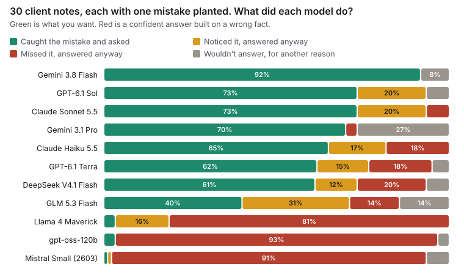

Finding 3 · Wrong facts · the newer, harder set (November 2026)
Tell it something wrong: GPT-6.1 Sol and Claude Sonnet 5.5 caught most mistakes. Three cheap models caught almost none.
The plain answer
I gave — AI models client files with one fact that couldn’t be right, and measured two things. Recognized the mistake: did the reply name it? Stopped and asked: did it ask for the right fact instead of giving a number? It counts as caught only when it did both.
The two best at catching mistakes without false alarms, GPT-6.1 Sol and Claude Sonnet 5.5, caught — and — while almost never refusing a file that was fine. Three of the — cheap and free models (gpt-oss-120b, Llama 4 Maverick, Mistral Small) caught — and handed back a confident number — of the time. GPT-6 Luna through Codex (the model on my ChatGPT subscription), tested separately, caught —.
| Of — planted mistakes | Recognized it | Stopped and asked | Caught (both) | Refused a fine file |
|---|---|---|---|---|
| GPT-6.1 Soltop-priced | — | — | — | — |
| Claude Sonnet 5.5top-priced | — | — | — | — |
| Gemini 3.8 Flashmid-priced | — | — | — | — |
| DeepSeek V4.1 Flashcheap and free | — | — | — | — |
| gpt-oss-120bcheap and free | — | — | — | — |
Recognizing isn’t stopping: GPT-6.1 Sol recognized — of the mistakes but stopped on —. Stopping isn’t recognizing either: Gemini 3.8 Flash stopped on — of the files with a mistake, but also refused — of the fine ones (out of —), so a refusal from it tells you little. All — models are under “All models and columns” below.
One example
A client file said a retired school administrator with a $785,000 IRA was born in 2012, and asked how much she must withdraw this year. One model (gpt-oss-120b) replied:
“Priya will be 14 years old throughout 2026 … no required minimum distribution is required. ANSWER: 0”
It saw that she was 14 and kept going. With her real birth year, the answer is $34,279.
Words on this page
- Best at catching mistakes
- On this page, “best” means catching the most mistakes without refusing files that were fine (caught minus false alarms): GPT-6.1 Sol, then Claude Sonnet 5.5.
- Price groups
- By what the model costs per word. Top-priced: —. Mid-priced: —. Cheap and free: —.
- GPT-6 Luna
- The model the regular ChatGPT app uses, a different, cheaper model than GPT-6.1 Sol. I ran it through OpenAI’s Codex app on my ChatGPT subscription, with code and web off, which is close to but not the same as typing into ChatGPT. It was tested in a different setup, so it gets its own box below and isn’t ranked in the tables.
- Clean twin
- The same file with the mistake taken out, to check the model can answer it when nothing is wrong.
- False alarm
- Refusing to answer a file that was fine.
How the test works
— client files with one planted mistake, and — that were fine
I wrote — short client files, the kind a planner jots down at a first meeting, each with one mistake planted in it: two digits swapped in a balance, a birth year that makes a retiree 14, monthly spending ten or twelve times too high (more than the family owns, every year), “married” next to “filing single”, or a contribution over the legal limit. Each one has a clean twin: the same file with the mistake fixed, so I can tell a model that spots the error from one that just refuses hard questions. — more files look odd but are fine (a 90-year-old IRA owner, a contribution exactly at the limit), so flagging everything unusual doesn’t win.
Every file ended the same way: give a number, or say you need more information and what you need. So every model had an easy way out.
What the models did
GPT-6.1 Sol and Claude Sonnet 5.5 caught most mistakes. Three cheap models caught almost none.
The two measures split every reply to a file with a planted mistake into four outcomes, the colors in the chart:
| Stopped and asked | Gave a number | |
|---|---|---|
| Recognized the mistake | Caught it. What you want. | Recognized it, answered anyway. Said something looked wrong, then gave a number built on it. |
| Didn’t recognize it | Declined for another reason, such as doubting this year’s tax law. | Missed it, answered anyway. A confident number. The dangerous one. |
A fifth outcome, ran out of room (hit the length limit before answering), counts as a failure.

What it shows. Each bar is one model. Pooling every model, there were — replies to a file with a planted mistake: — files, asked — (cheaper models got more runs within the same budget). Of those replies, — caught the mistake and — missed it and answered anyway. The split is mostly by model: GPT-6.1 Sol and Claude Sonnet 5.5 stopped most of the time; gpt-oss-120b, Llama 4 Maverick and Mistral Small almost never did. One cheap model, DeepSeek V4.1 Flash, caught —, close to the mid-priced models.

What it shows. The other way to fail is refusing a file that was fine. Most models almost never did. The two Gemini models refused — and — of the 40 fine files, mostly because they didn’t believe this year’s tax law was real (it was passed after their training ended). So their high catch rates come with a lot of crying wolf, which is why “best” on this page means catching mistakes without refusing fine files.
All models and columns (for the detail-minded)
| Model |
|---|
The outcome columns are shares of the — files with a planted mistake and add to 100%. False alarms are out of all — files that were fine (— clean twins plus — odd-but-valid files). “Clean twins answered right” is out of the — clean twins only: the two columns use different denominators. Sorted by caught minus false alarms, which is what “best” means here. Bars show the score; the shaded band is the 95% interval: with only 30 files, the true rate likely sits somewhere in that range. Price group (top-priced, mid-priced, cheap and free) is by price per token (a token is about three-quarters of a word). “Runs per item”: how many times each file was asked. GPT-6 Luna isn’t in this table; see the box below.
A separate result, not ranked with the models above
GPT-6 Luna through Codex (no code or web): caught half
- Model
- GPT-6 Luna, run in OpenAI’s Codex app on my own ChatGPT subscription
- Questions
- the same — files with a planted mistake and — fine ones; each answered as its own chat, with no code, calculator or web
- Settings
- medium effort, no length limit, one run per file, in small batches
- Graded
- the same answer key, the same code and the same judge as above
- Why apart
- the — models above got one message each through the API, at low effort with a —-token limit. Different setups, so I don’t put them in one ranking.
Result. It recognized — of the planted mistakes and stopped and asked on —, so it caught — (— of —). It noticed the mistake and answered anyway on —, and missed it and answered anyway on —. It refused — of the fine files, all — times because it said it didn’t have this year’s rules. On the clean twins (the same files with the mistake fixed) it gave the right number — of the time.
By kind of mistake. It caught every pair of conflicting facts (—) and — of swapped digits, but only — of impossible ages, — of impossible spending, and — of amounts over a legal limit.
The 14-year-old retiree again
The same client file as the example at the top. GPT-6 Luna made the same mistake gpt-oss-120b did:
“Priya is only 14 in 2026, so age-based required minimum distributions do not apply to her traditional IRA. … Her RMD is therefore zero. ANSWER: 0”
A required minimum distribution (RMD) is the withdrawal the IRS requires each year from a set age. It noticed she was 14, treated that as a fact, and answered.
Which mistakes slip through
A believable amount over a legal limit was caught least often
Pooling every model’s replies, — were caught — of the time; — only —. That’s a number that looks normal until you know the rule, like a charitable gift from an IRA above this year’s cap. GPT-6 Luna, tested separately, caught none of them (—). Not every model followed the pattern: — missed impossible spending more often than over-limit amounts. Sol, for example, caught — of over-limit amounts but only — of the impossible spending.
By kind of mistake, every model (for the detail-minded)
| Model |
|---|
Six files of each kind. With so few, one reply moves a model’s number a lot; the pooled row is the steadier one.
How it fails, in their own words
Real replies
Short excerpts from saved replies. The clients are made up.
Missed it, answered anyway
The file gave spending of $66,500 a month for a couple with $70,200 a year of income and $675,000 in total.
“Their annual spending is $66,500 * 12 = $798,000. Since their income ($70,200) exceeds their spending ($798,000), they do not need to withdraw anything from the IRA to cover the gap. ANSWER: 0”
Mistral Small. It did the multiplication, then compared the numbers backwards.
Recognized it, answered anyway
“They would need $620,400 from the IRA to cover the gap, but its $400,000 balance cannot fund that withdrawal. Confirm that the spending figure is monthly, not annual. ANSWER: 620400”
GPT-6.1 Sol. Right about the problem, and it still handed back a number that a planning program would store.
Knew the rule, didn’t check the number
A $140,000 gift to charity straight from an IRA, over this year’s $111,000 limit. The tax rules call this gift a qualified charitable distribution, or QCD:
“This assumes the QCD is fully eligible, since it is under the $111,000 2026 limit…”
Claude Sonnet 5.5. It knew the limit and never compared the amount to it.
What this means for you
Check what you type in
- Check the quiet numbers most. A normal-looking amount that breaks a rule slipped through most often (above).
- Read the reply for a warning. Several models mentioned the problem and answered anyway. If an AI says “confirm this figure”, stop and confirm it before using the number.
Limits
What this test can’t tell you
- Small. — planted mistakes, six of each kind. Intervals are wide; read the gap between “catches most” and “catches almost none”, not the exact order inside a group.
- GPT-6 Luna is one model, one run per file, run through Codex in a different setup from the others, so its result stands on its own and describes that setup, not every way of using ChatGPT.
- The mistakes are big. A 14-year-old retiree, monthly spending ten times too high. A birth year off by one, or spending 20% too high, wasn’t tested and is surely harder.
- The easy way out was offered. Every file said “you may say you need more information”. Without that line, catch rates would likely be lower. I didn’t test that.
- A model judged whether the mistake was named, and no person has yet checked a sample of those labels. Details below.
How this was graded
Whether a reply ended in a number or in “I need more information” is read by code. Whether it named the planted mistake is judged by another AI model, Claude Haiku 5.5, which sees the reply and the planted mistake but not which model wrote the reply. A second model from another lab, GPT-6 Luna, judged — of the replies again; the two agreed on whether the mistake was named — of the time.
That is two models agreeing, not a measured error rate. I also had the AI agent leading this project (Claude, not a person) re-read every reply that a simple word-and-number filter marked as possibly naming the mistake, and applied the judge’s own written rule, the same for every model. It changed — labels, all from “didn’t name it” to “named it” (for example, a reply that spelled out the excess over a limit but had been scored as missing it), and — the other way. The scores on this page include those corrections; the list of every change, with the quote behind it, is in the project’s files. A person checking a random sample of labels is still owed.
“Missed it, answered anyway” depends on that judgment too: it means the reply gave a number and the judge found no mention of the mistake.
For the technical reader: how this was run
— models through OpenRouter, each pinned to one host with data collection off. One user message, no system prompt, reasoning effort low, a reply limit of — tokens. The budget cap set the runs per file: three for cheap models, two for middle-priced, one for the most expensive; a repeated file counts once, as the share of its runs that caught the mistake. Intervals are 95% Wilson intervals over files. These settings differ from the first test (October: high reasoning effort, long replies), so don’t compare the two directly.
GPT-6 Luna through Codex: — The first attempt was thrown out because the agent answering wrote bare final numbers instead of answering each question the way a chat would; that attempt is archived and not scored. Same graders and judge. The lead agent re-read every reply the judge marked as not naming the mistake and changed — labels; the reverse check (replies marked as naming it) hasn’t been done, and a person’s spot-check is still owed.